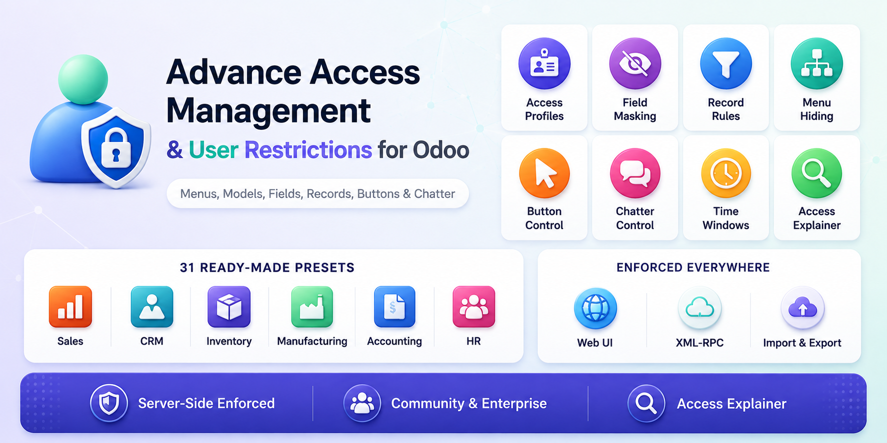
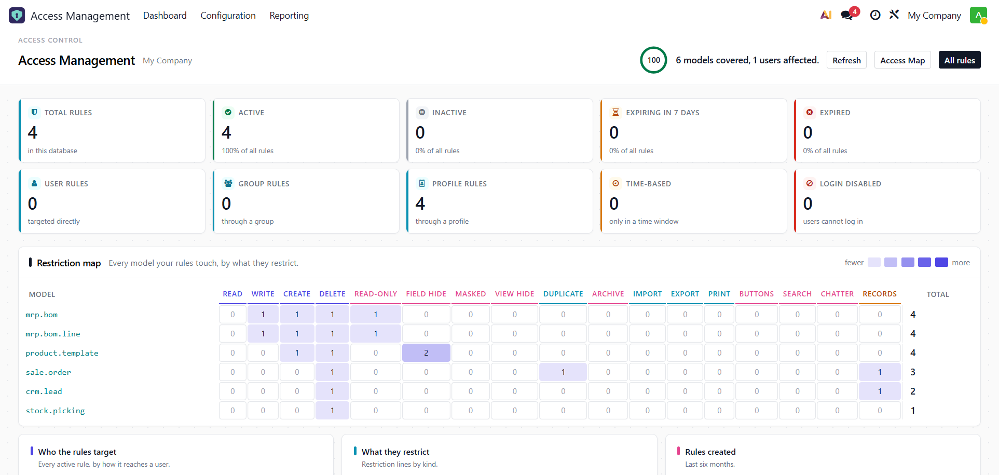
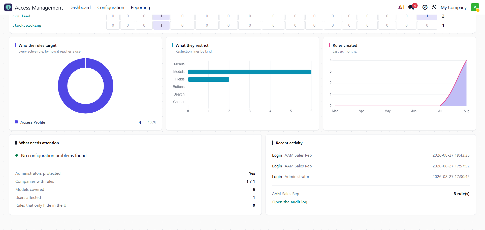
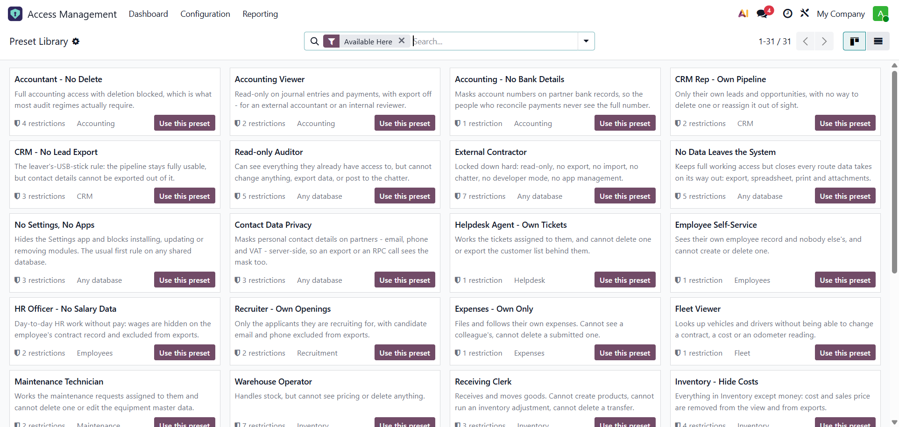
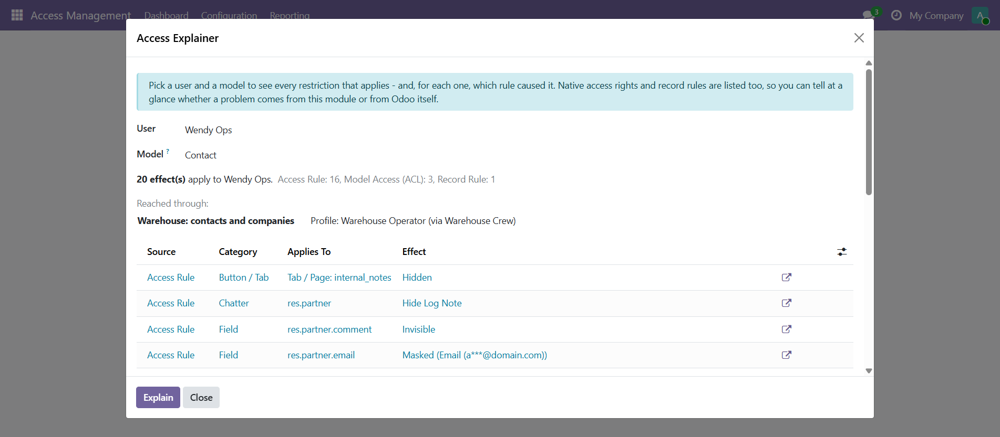
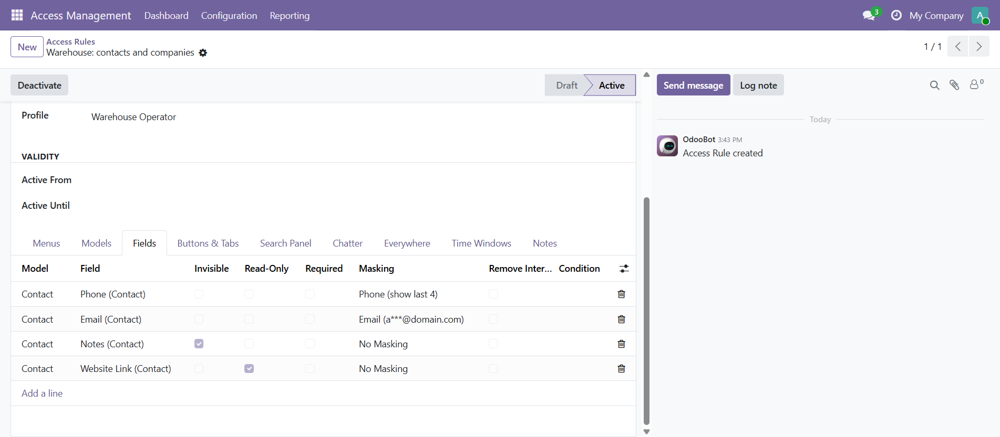
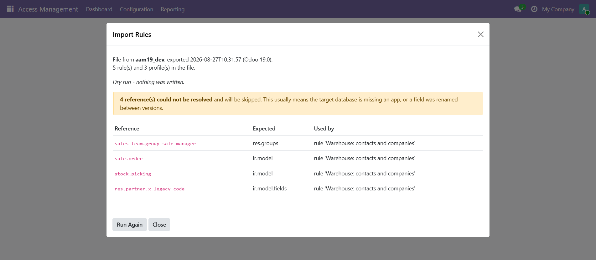
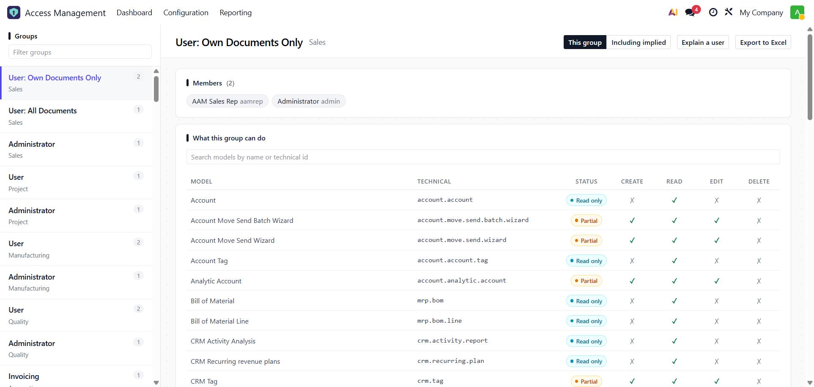
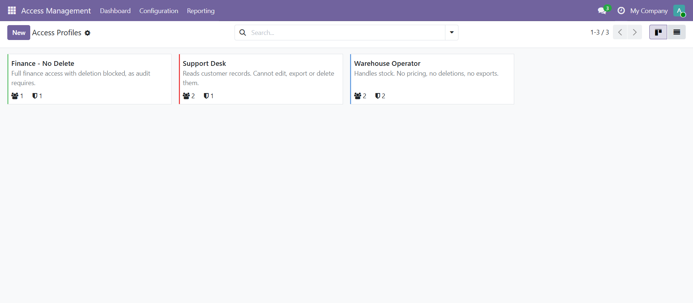

Advance Access Management gives you complete user access rights and role based access control in one app. Restrict menus, models, fields, records, buttons, search and chatter per user, group or profile. Every access restriction is applied on the server, so it also applies to the API.
Field and record restrictions are applied in
read,
fields_get
and the ORM access layer, not only in the view. XML-RPC and
web_read
return the same restricted data as the browser.
Pick a user and a model. The Access Explainer lists each effect, the rule that caused it, and how that rule reached the user (profile, group or direct). Odoo's own access rights and record rules are included in the same report.
Rules export to JSON using external IDs and technical names, not database ids. Import runs a dry run that lists any reference missing from the target database before writing anything.


Configuration > New Restriction walks you through it: pick the users or groups, pick the models and menus, choose what they can do, then read a plain-language summary of exactly what will be created before anything is written. No knowledge of the underlying rule structure is needed.
Users or groups. The count of people affected updates as you choose, and administrators are flagged before you go further.
The models it covers and the menus to hide. Either on its own is enough.
View only, cannot delete, cannot create or delete, or your own combination. Then fields, records, chatter, search, buttons and account-wide switches.
A written summary of what will be created, then apply. Optionally save it as a reusable profile at the same time.
“Only their own records” is resolved per model rather than assumed: the wizard looks for the model's own salesperson or responsible-user field and writes the matching domain. A model with no link to a user gets no domain instead of a broken one.
What comes out is an ordinary Access Rule, editable in full afterwards. The wizard can also load an existing rule back in — and when a rule has grown past what the four steps can show, it says so and sends you to the rule form rather than silently dropping the difference.
Most setups need no custom rules. Open the Preset Library, search by name or by the model you want to restrict, select one or more presets and apply. Each becomes a profile with its rules already configured, editable like any other profile.
Presets that need an app you have not installed are marked unavailable. The wizard lists which models it will apply to and which it will skip on your database before you confirm.

sale.order
returns the presets that restrict it.

read, so exports and API calls return the masked value

Restriction map, health score, rule counts and charts, with drill-through to the rules behind each figure.
Per group: members, model-by-model CRUD rights, and a list of what the group cannot do. Exports to Excel.
Per user and model: every effect, the rule responsible, and the path from rule to user.
A four-step wizard from who to applied, with a written review before anything is created. Can reopen an existing rule.
31 profiles across 11 app families, searchable by model name, applied one or several at a time.
JSON export and import with a dry-run report, for moving rules between databases.
Rule changes, login and logout activity, and denied access attempts, with scheduled pruning.


Deny wins. Booleans are combined with OR, hidden sets with union, domains with AND.
Priority breaks ties between restrictions of the same kind. It cannot turn a denial into a permission. The Explainer lists every rule that contributed to a result.
All rules that apply to a user are compiled once into a single policy, cached per user, company, language and debug mode. Each enforcement point is then a dictionary lookup.
Time-based rules are evaluated separately so they do not invalidate the cache. The cache is cleared when a rule, profile or assignment changes.
Installation support, custom access rights features and Odoo development, straight from the developer who wrote the module. You are emailing a person, not a ticket queue.
roshankumar402@gmail.comPlease get in touch before leaving a rating. If something is broken I want to fix it, and customization requests are welcome.